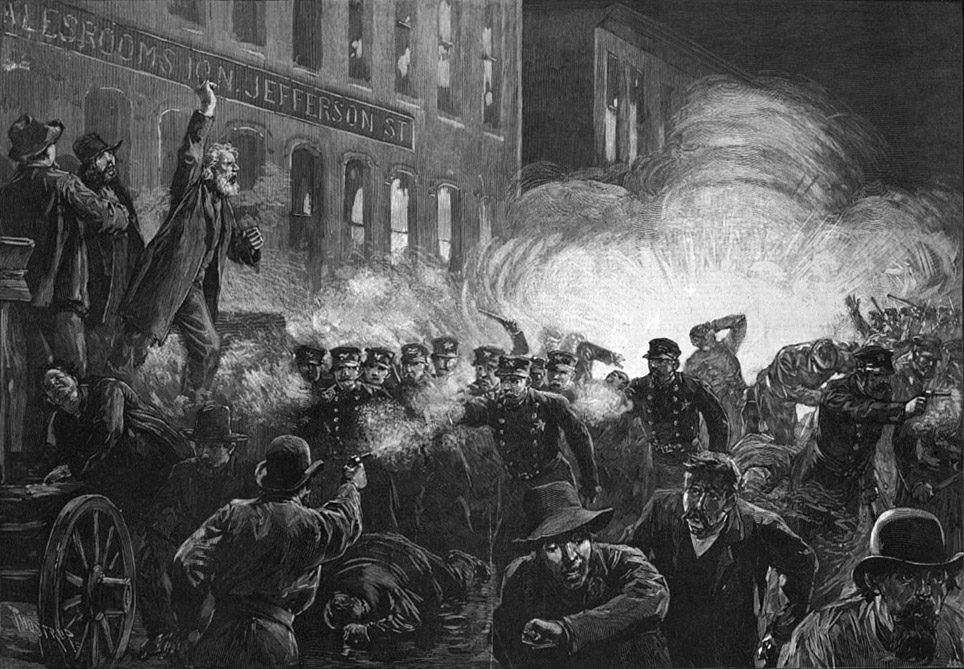
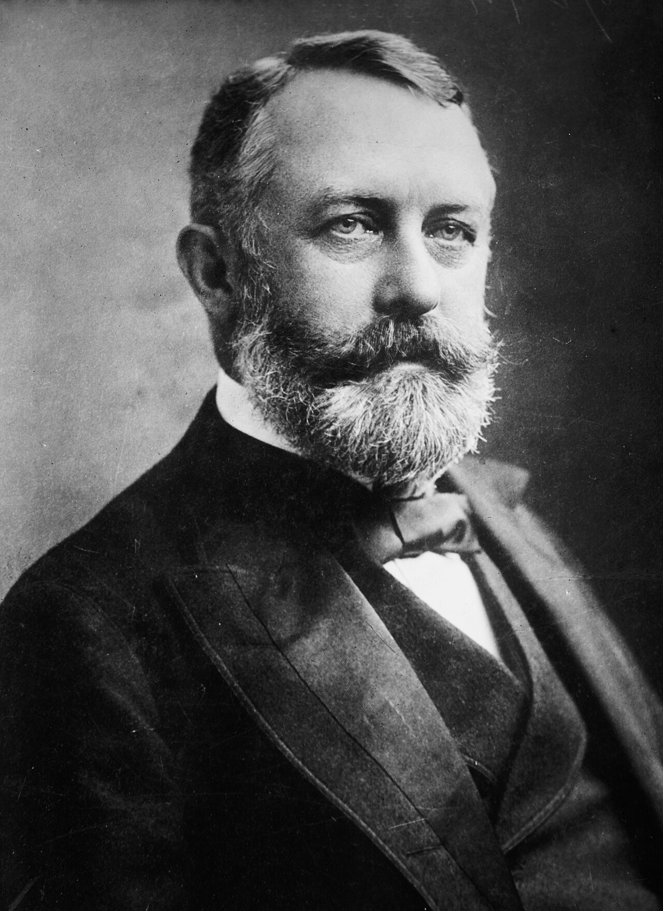
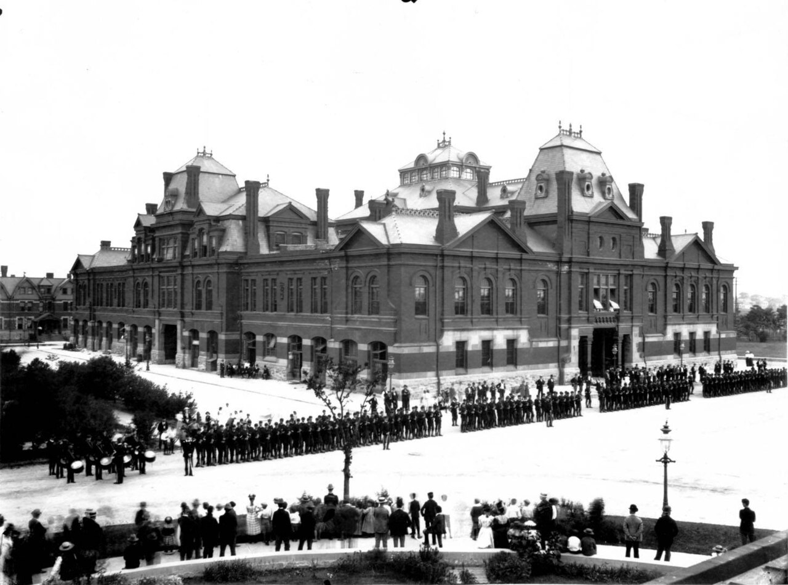

Directions: Work through all three stations. At each one, study the image, read the labeled summary, and answer the questions. Then complete the verdict in Part 2, using evidence from at least two stations.
Source: Engraving by Thure de Thulstrup, "The Anarchist Riot in Chicago," Harper's Weekly, May 15, 1886, with a summary of the events.

Summary. On May 4, 1886, during a national campaign for the eight-hour day, a labor meeting in Haymarket Square was ending when police ordered it to disperse. A person who was never identified threw a bomb into the police ranks. Seven police officers and at least four civilians died, by the counts most often given. Eight anarchist labor leaders were tried for murder on the theory that their speeches and writings had encouraged the act, and four were hanged. No evidence tied any defendant to the bomb itself. Newspapers across the country printed dramatic images like this one, and much of the public linked the labor movement as a whole with violence and foreign radicalism. The Knights of Labor had not called the meeting, but they were blamed with the rest, and their membership fell sharply in the following years.
1. The engraving shows the speech, the bomb, and the shooting happening at the same moment, which is not how the events unfolded. Why would a national magazine publish the scene this way, and what did readers most likely conclude about the labor movement from it?
2. The bomb thrower was never identified, yet the Knights of Labor collapsed after Haymarket. What does that outcome show about how a strike movement can be defeated without losing a vote, a battle, or a court case about its actual demands?
Source: Portrait of Henry Clay Frick, with a summary of the Homestead lockout and battle drawn from the congressional investigation of the employment of Pinkerton detectives at Homestead (1892) and contemporary reporting.

Summary. The steelworkers at the Carnegie Steel works in Homestead belonged to the Amalgamated Association of Iron and Steel Workers, one of the strongest craft unions in the country. In 1892 Henry Clay Frick, who ran the works while Andrew Carnegie was in Scotland, proposed a wage cut and set out to end the union's role at the plant. When the contract expired, Frick locked the workers out and fortified the mill. Before dawn on July 6, about 300 armed Pinkerton guards arrived by river barge to take possession of the works. The workers and the town met them in a gun battle that lasted most of the day. About ten men died, by the counts most often given; contemporary totals differ. The Pinkertons surrendered and were driven out of town. Six days later, Pennsylvania sent about 8,000 state militia to Homestead. Under military protection the company reopened the plant with replacement workers. The strike held on until November, then collapsed. The union at Homestead was destroyed.
1. Frick chose to bring in Pinkerton guards by barge at night rather than ask the local sheriff to open the plant. What does that choice show about the relationship between the company and the town of Homestead?
2. The workers won the battle on July 6 and lost the strike by November. Identify the two things that changed between July and November, and explain which one you think mattered more.
Source: Photograph of troops in formation outside the Arcade Building in Pullman, Illinois, during the strike of 1894, with a summary of the strike.

Summary. George Pullman built both a railroad car factory and the town beside it, and his workers were required to live in company housing and pay company rents. During the depression that began in 1893, the company cut wages, in many cases by a quarter or more, but did not lower the rents. In May 1894 the workers struck. They joined the American Railway Union, led by Eugene V. Debs, and the union voted a national boycott: no member would handle a train carrying a Pullman car. Rail traffic across much of the country stalled. The railroad companies appealed to Washington. A federal court issued an injunction ordering the union to stop interfering with the trains and the United States mail, and President Grover Cleveland sent federal troops to Chicago, over the objection of the governor of Illinois. About thirty people died in clashes across the country, by the estimate most often given. Debs refused to obey the injunction and was jailed. The boycott collapsed, the American Railway Union was destroyed, and Pullman workers who returned signed pledges not to join a union.
1. The Pullman workers lived in a town their employer owned. How did that fact make their strike both stronger at the start and harder to sustain?
2. At Homestead the decisive force was a state militia. At Pullman it was a federal injunction and federal troops. Why did the conflict move from the state level to the federal level in 1894? Answer from the evidence in the summary.
Rank the three explanations below for why collective action failed, from 1 to 3. (1 = the explanation that does the most work across all three strikes, 3 = the least.)
______ Employers could hire force of their own: guards, replacements, and lawyers.
______ Government power, militia, troops, courts, and injunctions, stood behind the employers.
______ The unions overreached, taking on fights larger than their members and funds could hold.
Defend your number 1 ranking in a short paragraph. Use specific evidence from at least two stations, and explain why your top explanation fits those strikes better than the explanation you ranked second.
1. The engraving shows the speech, the bomb, and the shooting happening at the same moment, which is not how the events unfolded. Why would a national magazine publish the scene this way, and what did readers most likely conclude about the labor movement from it? A single dramatic image sells the event and fits a page; compressing the sequence also makes the speech appear to cause the explosion. Readers most likely concluded that labor meetings led directly to violence, and that the movement was dangerous and radical. The image is evidence about public opinion as much as about the event.
2. The bomb thrower was never identified, yet the Knights of Labor collapsed after Haymarket. What does that outcome show about how a strike movement can be defeated without losing a vote, a battle, or a court case about its actual demands? A movement can be defeated by association. The trials and press coverage attached the bomb to organized labor generally, members left or were frozen out, and the Knights lost the public standing their size depended on, although they had not called the meeting and the eight-hour demand itself was never adjudicated.
1. Frick chose to bring in Pinkerton guards by barge at night rather than ask the local sheriff to open the plant. What does that choice show about the relationship between the company and the town of Homestead? The town, including its workers, their families, and local officials, stood with the union, so the company could not rely on local authority. Frick needed an outside, private force that answered to the company alone, delivered in secret because a public arrival would be resisted, as it was.
2. The workers won the battle on July 6 and lost the strike by November. Identify the two things that changed between July and November, and explain which one you think mattered more. The state sent about 8,000 militia, which held the town and protected the plant, and the company reopened with replacement workers, so the strike no longer stopped production and strikers' funds and resolve ran down over four months. Either can be ranked first if defended; the militia is the enabling condition for the replacements, which is the strongest form of the answer.
1. The Pullman workers lived in a town their employer owned. How did that fact make their strike both stronger at the start and harder to sustain? Stronger: the whole community shared the same grievance, wage cuts with rents held steady, and could act together, and the town gave the strike a visible, unified base. Harder: the employer was also the landlord, strikers owed rent to the company they were striking against, and the company could pressure families through housing as well as jobs.
2. At Homestead the decisive force was a state militia. At Pullman it was a federal injunction and federal troops. Why did the conflict move from the state level to the federal level in 1894? Answer from the evidence in the summary. The Pullman boycott was national. It stalled rail traffic across much of the country and interfered with the United States mail, which gave the federal government its ground to act: a federal court injunction and federal troops, sent even over the Illinois governor's objection. Homestead stayed inside one state and one plant, so state force was enough.
Full credit should be awarded if the student:
Blueprint 5 and 6. Station work is drawn mainly from Blueprint 6; the Pullman rent and wage evidence also serves Blueprint 5.